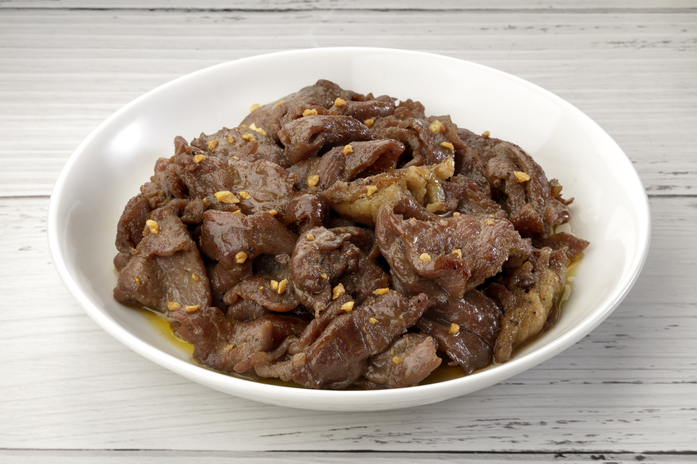

Beef Tapa is dried cured beef similar to “Beef Jerky”. This is traditionally prepared by curing the meat with sea salt and letting it dry directly under the sun for the purpose of preserving the meat. Nowadays, commercialized Beef Tapa are often cured but most do not undergo drying.Tapa is usually fried and is best served with vinegar.
A popular combination called “Tapsilog” is commonly served in eateries called tapsihan and gotohan. Tapsilog is an abbreviation for Tapa, Sinangag (Fried Rice), and Itlog (Fried egg). Other meats used to make tapa are: Carabao's meat (tapang kalabaw) , Deer's meat (tapang Usa), Wild Boar's meat (tapang Baboy Ramo),and horse's meat (tapang kabayo).